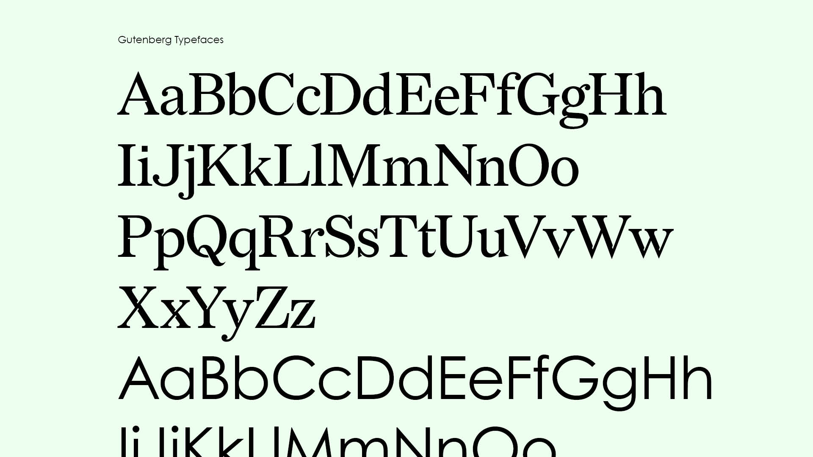

Griot Book Club
Identity Revolution


Letterhead Identity Application


Brand System Touchpoints
Gutenberg, wip
Role: Design, Motion, Copywriting, Art Direction
Year: 2024
Idea
Project Gutenberg is home to the first eBook, created on July 4, 1971 by Michael Hart. Whose mission is to facilitate the creation and distribution of eBooks for all. Since its inception, the group has remained committed to its mission—the visual design left to communicate function over expression.
The potential for solidifying Project Gutenberg's original intention within its visual design system is one thing. Expanding it across social media and global in-person community projects is the fundamental ideal. To Gutenberg's dedicated volunteers, 30,000+ daily readers, and the undiscovered writers, makers, and builders.
Approach
Delving into the idealism encompassing Gutenberg, I was drawn in by the founder's commitment to proliferating eBooks as a means and an end. This principle became the foundation for the visual design system—using geometry-first typefaces as the basis of the logotype is the individual pixel. The combination of digital and analogue became the motif driving the principle's visual expression. Using a primary typeface inspired by legal documents in tandem with a color palette inspired by digital output.
Delivery
The result is a cohesive design system emerging from the identity's building blocks into individual brand activated touchpoints. Across letterhead, website, application, and merchandise.